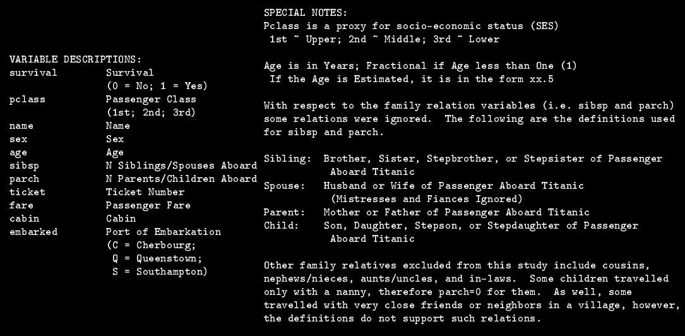
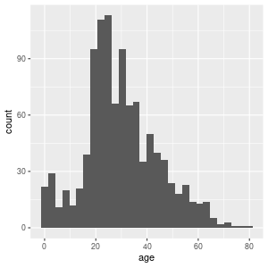
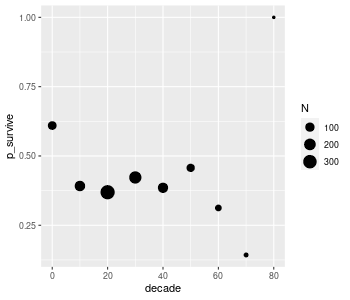
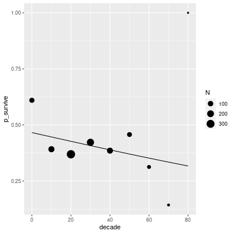

Created: 2021-05-06 Thu 12:11
| data | approach | link | variance | function |
|---|---|---|---|---|
| binary | logistic regression | logit | binomial | glm(), lme4::glmer() |
| count | Poisson regression | log | Poisson | glm(), lme4::glmer() |
| ordinal | ordinal regression | logit | binomial | ordinal::clm(), ordinal::clmm() |
| Bernoulli trial | An event that has a binary outcome, with one outcome typically referred to as ’success’ |
| proportion | A ratio of successes to the total number of Bernoulli trials, proportion of days of the week that are Wednesday is 1/7 or about .14 |
| odds | A ratio of successes to non-successes, i.e., odds of a day being Wednesday are 1 to 6, natural odds= 1/6 = .17 |
| log odds | The (natural) log of the odds (turns multiplicative effects into additive effects) |
\(log\left(\frac{p}{1-p}\right)\) or \(log\left(\frac{Y}{N-Y}\right)\)
where \(p\) is a proportion, \(N\) is total trials and \(Y\) is observed successes
\(\eta = \beta_0 + \beta_1 X\)
single-level data, bernoulli trials
mod <- glm(DV ~ IV, family = binomial(link = "logit"), ...)
single-level data, binomial counts
mod <- glm(cbind(Y, K) ~ IV, family = binomial(link = "logit"), ...)
where K = N - Y
lme4::glmer()https://www.kaggle.com/c/titanic

dat <- readxl::read_excel("titanic4.xls")
dat %>%
count(survived, sex)
survived sex n
<dbl> <chr> <int>
1 0 female 127
2 0 male 682
3 1 female 339
4 1 male 161
dat %>%
group_by(sex) %>%
summarise(p = mean(survived),
Y = sum(survived),
N = n(), .groups="drop")
# A tibble: 2 x 4 sex p Y N <chr> <dbl> <dbl> <int> 1 female 0.727 339 466 2 male 0.191 161 843
mod <- glm(survived ~ sex, binomial(link = "logit"), dat)
summary(mod)
Call:
glm(formula = survived ~ sex, family = binomial(link = "logit"),
data = dat)
Deviance Residuals:
Min 1Q Median 3Q Max
-1.6124 -0.6511 -0.6511 0.7977 1.8196
Coefficients:
Estimate Std. Error z value Pr(>|z|)
(Intercept) 0.9818 0.1040 9.437 <2e-16 ***
sexmale -2.4254 0.1360 -17.832 <2e-16 ***
---
codes: 0 ‘***’ 0.001 ‘**’ 0.01 ‘*’ 0.05 ‘.’ 0.1 ‘ ’ 1
(Dispersion parameter for binomial family taken to be 1)
Null deviance: 1741.0 on 1308 degrees of freedom
Residual deviance: 1368.1 on 1307 degrees of freedom
AIC: 1372.1
Number of Fisher Scoring iterations: 4
## lots of NAs
dat %>%
count(f = is.na(age))
# A tibble: 2 x 2 f n <lgl> <int> 1 FALSE 1046 2 TRUE 263
ggplot(dat, aes(age)) +
geom_histogram()

dat2 <- dat %>%
filter(!is.na(age)) %>%
mutate(decade = floor(age / 10) * 10) %>%
group_by(decade) %>%
summarise(p_survive = mean(survived),
N = n(),
.groups = "drop")
g <- ggplot(dat2, aes(decade, p_survive)) +
geom_point(aes(size = N))
g

mod <- glm(survived ~ age, binomial(link = "logit"), dat)
summary(mod)
Call:
glm(formula = survived ~ age, family = binomial(link = "logit"),
data = dat)
Deviance Residuals:
Min 1Q Median 3Q Max
-1.1189 -1.0361 -0.9768 1.3187 1.5162
Coefficients:
Estimate Std. Error z value Pr(>|z|)
(Intercept) -0.136531 0.144715 -0.943 0.3455
age -0.007899 0.004407 -1.792 0.0731 .
---
codes: 0 ‘***’ 0.001 ‘**’ 0.01 ‘*’ 0.05 ‘.’ 0.1 ‘ ’ 1
(Dispersion parameter for binomial family taken to be 1)
Null deviance: 1414.6 on 1045 degrees of freedom
Residual deviance: 1411.4 on 1044 degrees of freedom
(263 observations deleted due to missingness)
AIC: 1415.4
Number of Fisher Scoring iterations: 4
newdat <- tibble(age = seq(0, 80, .2))
## see ?predict.glm
my_pred <- predict(mod, newdat, type = "response")
dat3 <- newdat %>%
mutate(p_survive = my_pred)
g + geom_line(aes(x = age, y = p_survive), data = dat3)

Created by Dale Barr